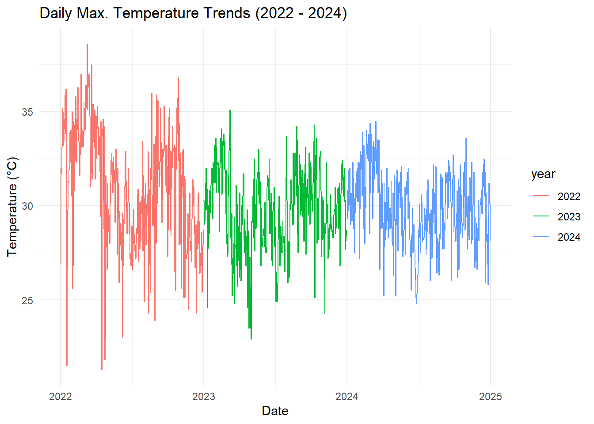

“Poultry flocks are particularly vulnerable to climate change because birds can only tolerate narrow temperature ranges” – The Poultry Site, 2009
If you were to stand in the middle of Kiziri, the neighborhood where JC Farms is located, and close your eyes, what would you feel? Maybe the sun warming your skin in the early morning, the humidity clinging to the air, or the occasional cool breeze sneaking through the trees. If you stood there long enough—day after day, year after year—you’d start to notice something: the rhythm of the weather, the subtle (and sometimes not-so-subtle) shifts that shape the world around you.
Numbers tell stories, but they whisper at first. Only when you step back do you see the broader picture.
I spent some time analyzing temperature data from 2022, 2023 and 2024—three years, connected by the same land, the same sky. What I found wasn’t just numbers. It was a pattern, a story of change, and perhaps a small warning about what lies ahead.
The Shape of the Year: Monthly Temperature Trends
Breaking the data down by month, a clear pattern emerged:
2022 was generally warmer than 2023 and 2024 across most months.
The biggest temperature spikes happened in the dry season months of January and February, and again in June and July.
Interestingly, March and April 2024 saw slightly cooler temperatures than their 2022 counterparts—possibly a sign of increased rainfall, though that’s another dataset worth exploring.
If you run a farm, this kind of information matters. Birds drink more water and eat less when it’s too hot. Heat stress can impact egg production, meat quality, and overall farm output. A shift of even a degree, when compounded over an entire season, can change productivity in ways that don’t always show up on a balance sheet—until they do.
The New Normal: Extreme Temperature Events
Perhaps the most alarming change was in temperature extremes. In 2022, there were several spikes above 30°C, which have continued in 2022 and 2024.
A good example: On March 9, 2022, temperatures hit 38.6°C—higher than anything recorded up to that point and since. That might not sound dramatic, but when it happens consistently, it changes everything.
Think about how chickens react to extreme heat. Unlike humans, they can’t sweat to cool off. Instead, they pant, reduce movement, and eat less—responses that make sense for survival but are disastrous for farm productivity.
Looking Ahead: What This Means for JC Farms
Here’s the real question: If this trend continues, what does it mean for JC Farms and for Kiziri?
Heat management will become more important. More shade, better ventilation, and strategic watering will be necessary as temperatures fluctuate more aggressively.
The risk of heat waves is rising. More extreme temperature events mean higher mortality risks for poultry, particularly for broilers, which are already heat-sensitive.
Understanding seasonality will be key. The warmest months are shifting slightly, and knowing when to adjust farming practices (feed schedules, stocking density, etc.) could help mitigate stress on the birds.
Farming is about adaptation. The land, the air, the climate—they don’t ask for permission before changing. They just do.
And the best farmers? They don’t fight the change. They see it coming. They prepare.
Kiziri’s climate is shifting. Now we know. The next step? Figuring out what to do with that knowledge.